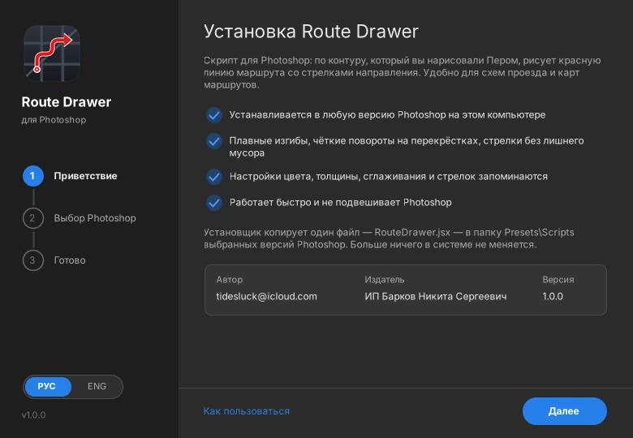
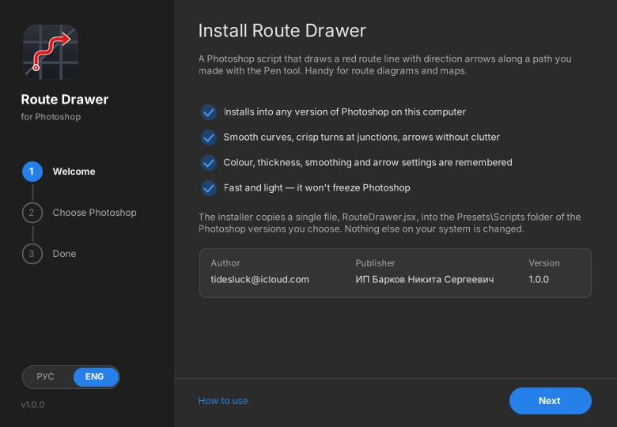
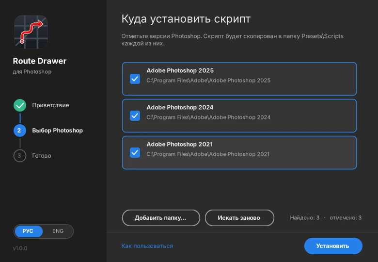
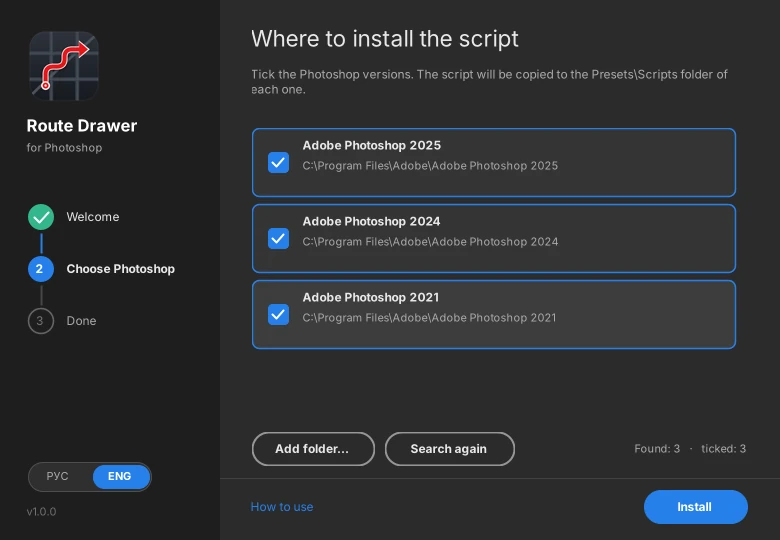
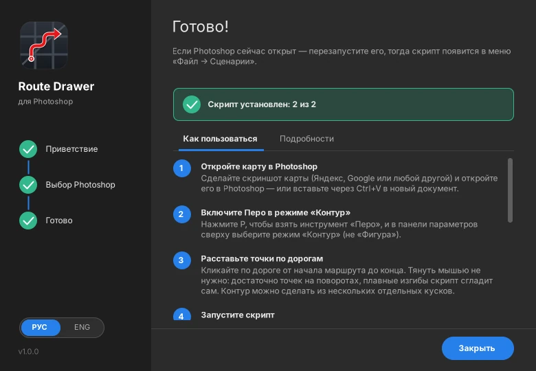
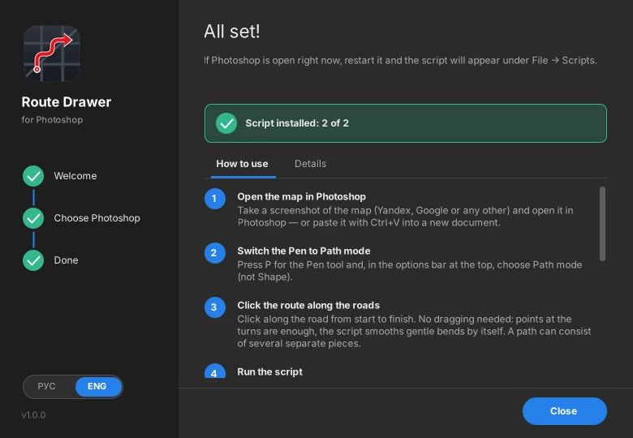

Маршрут на карте — одним запуском скриптаA route on the map in one script run
Ставьте точки Пером по дорогам — скрипт для Photoshop проведёт по ним гладкую красную линию со стрелками направления. Для схем проезда, учебных маршрутов автошкол, экскурсий и доставки.Click points along the roads with the Pen tool, and the Photoshop script draws a smooth red route line with direction arrows. Made for driving routes, learner-driver maps, tours and deliveries.
- Windows 10 и 11, 223 КБWindows 10 and 11, 223 KB
- Photoshop 2019 и новееPhotoshop 2019 and newer
- Бесплатно, без трекеровFree, no trackers
Это рабочее демо: сглаживание, линия и стрелки считаются тем же кодом, что и в скрипте. Поставьте точки по дорогам и нажмите «Нарисовать» — потом можно двигать ползунки и добавлять точки.This is a working demo: smoothing, line and arrows are computed by the same code as in the script. Place points along the roads and press “Draw” — then move the sliders or add more points.
Что умеет скриптWhat the script does
Он делает одно: превращает контур из «Пера» в аккуратный маршрут. Всё остальное — настройки.It does one thing: turns a Pen path into a tidy route. Everything else is a setting.
Одна непрерывная линияOne continuous line
От первой точки до последней, без разрывов. Контур может состоять из нескольких кусков — каждый получит свои стрелки.From the first point to the last, with no gaps. A path can have several pieces, and each one gets its own arrows.
Сглаживание, которое понимает дорогуSmoothing that understands roads
Плавные изгибы получаются гладкими, а повороты на перекрёстках остаются чёткими. Тянуть «усы» у точек не нужно.Gentle bends come out smooth while turns at junctions stay crisp. You never have to drag Pen handles.
Стрелки без мусораArrows without clutter
В начале маршрута, после поворотов и изредка на длинных прямых. Белая обводка не даёт им потеряться на линии.At the start, after turns and occasionally on long straights. A white outline keeps them readable on the line.
Настройки, которые запоминаютсяSettings that are remembered
Цвет, толщина, сглаживание, размер и частота стрелок. Размеры подстраиваются под размер картинки, так что скриншот любого размера выглядит одинаково.Colour, thickness, smoothing, arrow size and spacing. Sizes scale with the image, so a screenshot of any size looks the same.
Не вешает PhotoshopNever freezes Photoshop
Без кисти и сотен мазков: геометрия считается в памяти и заливается несколькими крупными операциями.No brush and no hundreds of strokes: the geometry is computed in memory and filled in a few large operations.
Откат одним шагомOne-step undo
Результат — два обычных слоя, ваш контур не меняется. Ctrl+Z отменяет всю отрисовку целиком.You get two ordinary layers and your path stays as it was. Ctrl+Z undoes the whole drawing at once.
Как пользоватьсяHow to use
Три действия: точки, запуск, результат. Скриншот карты — Яндекс, Google или любой другой.Three actions: points, run, result. Any map screenshot works — Yandex, Google or anything else.
-
Поставьте точки ПеромPlace points with the Pen
Откройте карту в Photoshop, возьмите Перо (P) в режиме «Контур» и кликайте по дороге от начала маршрута до конца. Тянуть мышью не нужно: на повороте хватит одной точки.Open the map in Photoshop, pick the Pen (P) in Path mode and click along the road from the start to the end. No dragging: one point per turn is enough.
-
Маршрут по контуруRoute from pathЛинияLineЦвет линии (HEX)Line colour (HEX)E5191CТолщина линии, pxLine thickness, px4Сглаживание плавных поворотов, pxSmoothing of gentle bends, px2,5СтрелкиArrowsРисовать стрелки направленияDraw direction arrows✓Размер стрелки, pxArrow size, px14НарисоватьDraw
Запустите скриптRun the script
Файл → Сценарии → RouteDrawer. Проверьте настройки и нажмите «Нарисовать». Окно скрипта пока только на русском; настройки запоминаются.File → Scripts → RouteDrawer. Check the settings and press “Нарисовать” (Draw). The script window is Russian only for now; your settings are remembered.
-
- Маршрут — стрелки
- Маршрут — линия
Получите два слояGet two layers
«Маршрут — линия» и «Маршрут — стрелки». Контур остаётся нетронутым, а Ctrl+Z откатывает всё одним шагом.“Маршрут — линия” (route line) and “Маршрут — стрелки” (arrows). Your path stays untouched and Ctrl+Z undoes everything in one step.
Как работаетHow it works
Скрипт не рисует кистью. Он считает геометрию в памяти и заливает её несколькими крупными операциями, поэтому Photoshop не зависает. Ниже — те же четыре этапа на одном маршруте.The script never paints with a brush. It computes the geometry in memory and fills it in a few large operations, so Photoshop stays responsive. Below are the same four stages on one route.
Ваши точкиYour points
Скрипт читает опорные точки контура. «Усы» у точек по умолчанию игнорируются, поэтому дрогнувшая рука не оставляет хвостов.The script reads the anchor points of the path. Handles are ignored by default, so a shaky click never leaves stray tails.
СглаживаниеSmoothing
Плавные повороты скругляются сильнее, резкие на перекрёстках — слабее. Отклонение от вашей точки ограничено настройкой.Gentle bends are rounded more, sharp junction turns less. The deviation from your point is capped by a setting.
Линия из фигурA line of shapes
Каждый отрезок — прямоугольник нужной толщины с небольшим нахлёстом, на стыках — круги. Лишние точки убираются с допуском 0,25 px.Each segment is a rectangle of the right thickness with a slight overlap, joints get circles. Redundant points are dropped within 0.25 px.
СтрелкиArrows
Одна в начале, по одной после поворотов и на длинных прямых. Белая подложка чуть шире самой стрелки.One at the start, then after turns and along long straights. A white backing is slightly larger than the arrow.
Подробности и все константы алгоритма — в README на GitHub.Details and all the algorithm constants are in the README on GitHub (in Russian).
УстановкаInstallation
Установщик сам найдёт Photoshop на компьютере и скопирует в него один файл — RouteDrawer.jsx. Реестр не меняется, удалять потом нечего.The installer finds Photoshop on your computer and copies a single file, RouteDrawer.jsx. Nothing is written to the registry, and there is nothing to uninstall later.


Запустите установщикRun the installer


Отметьте версии PhotoshopTick your Photoshop versions


Перезапустите PhotoshopRestart Photoshop
Route Drawer 1.0.0 для WindowsRoute Drawer 1.0.0 for Windows
Установщик просит права администратора: скрипт записывается в папку Photoshop в Program Files. Без установщика: положите RouteDrawer.jsx в папку Presets\Scripts вашей версии Photoshop или запустите через Файл → Сценарии → Обзор…The installer asks for administrator rights because the script is written into the Photoshop folder in Program Files. Without it: put RouteDrawer.jsx into the Presets\Scripts folder of your Photoshop, or run it via File → Scripts → Browse…
Контрольная сумма SHA-256SHA-256 checksum
81fc8bab5091ff2cf153c149daefad1045d97de12463f7417b768d6ebfcffe49
Установщик пока без цифровой подписи, поэтому Windows может написать «Неизвестный издатель» или показать SmartScreen. Сверьте сумму в PowerShell: Get-FileHash .\RouteDrawer-Setup.exeThe installer is not code-signed yet, so Windows may say “Unknown publisher” or show SmartScreen. Compare the checksum in PowerShell: Get-FileHash .\RouteDrawer-Setup.exe
Сумма файла RouteDrawer.jsxChecksum of RouteDrawer.jsx
206a2d154a569248057e397a4633988a8a1c39fe1cb08ece3d1ecc88b7c0b4d7
Частые вопросыQuestions
Скрипта нет в меню «Сценарии»The script is missing from the Scripts menu
Перезапустите Photoshop: меню читается при запуске. Если пункта всё равно нет, проверьте, что файл лежит в папке Presets\Scripts именно той версии, которую вы запускаете, или откройте его через Файл → Сценарии → Обзор….Restart Photoshop: the menu is read at startup. If it is still missing, make sure the file sits in Presets\Scripts of the exact version you run, or open it via File → Scripts → Browse….
Пишет, что в документе нет контураIt says there is no path in the document
Перо должно быть в режиме «Контур», а не «Фигура». Контур виден в палитре «Контуры» (Окно → Контуры) как «Рабочий контур». Если его нет — поставьте точки заново в нужном режиме.The Pen must be in Path mode, not Shape. Your path shows up in the Paths panel (Window → Paths) as “Work Path”. If it isn’t there, place the points again in the right mode.
Стрелки смотрят не в ту сторонуThe arrows point the wrong way
Направление — это порядок точек: от первой к последней. Отмените отрисовку (Ctrl+Z), стройте контур от старта к финишу и запустите скрипт снова.The direction follows the order of the points, first to last. Undo the drawing (Ctrl+Z), build the path from start to finish and run the script again.
Линия угловатая или слишком «срезает» поворотыThe line looks angular, or cuts the corners too much
Угловатая — увеличьте «Сглаживание плавных поворотов». Уходит от ваших точек слишком далеко — уменьшите его и «Скругление резких поворотов».Angular: raise “Smoothing of gentle bends”. Straying too far from your points: lower it and “Rounding of sharp turns”.
Можно ли использовать в коммерческой работе?Can I use it in commercial work?
Да. Пользоваться скриптом можно бесплатно, а всё, что вы нарисовали, принадлежит вам и не требует указания автора. Нельзя продавать скрипт, распространять его под своим именем и менять без разрешения автора — полный текст в лицензии RDL 1.0.Yes. The script is free to use, and whatever you draw with it is yours, with no credit required. You may not sell it, distribute it under your own name or modify it without the author’s permission — see the full RDL 1.0 licence (Russian and English).
Работает ли на Mac?Does it work on a Mac?
Скрипт — обычный .jsx, его можно положить в /Applications/Adobe Photoshop …/Presets/Scripts, но на Mac он не проверялся. Установщик — только для Windows.The script is a plain .jsx and can be placed in /Applications/Adobe Photoshop …/Presets/Scripts, but it has not been tested on a Mac. The installer is Windows-only.
Установщик не нашёл мой PhotoshopThe installer did not find my Photoshop
Нажмите «Добавить папку…» и укажите папку, где лежит Photoshop.exe, например C:\Program Files\Adobe\Adobe Photoshop 2024.Click “Add folder…” and pick the folder that contains Photoshop.exe, for example C:\Program Files\Adobe\Adobe Photoshop 2024.
Как удалить скриптHow do I remove the script
Удалите файл RouteDrawer.jsx из папки Presets\Scripts. Больше ничего убирать не нужно.Delete RouteDrawer.jsx from the Presets\Scripts folder. Nothing else needs to be removed.